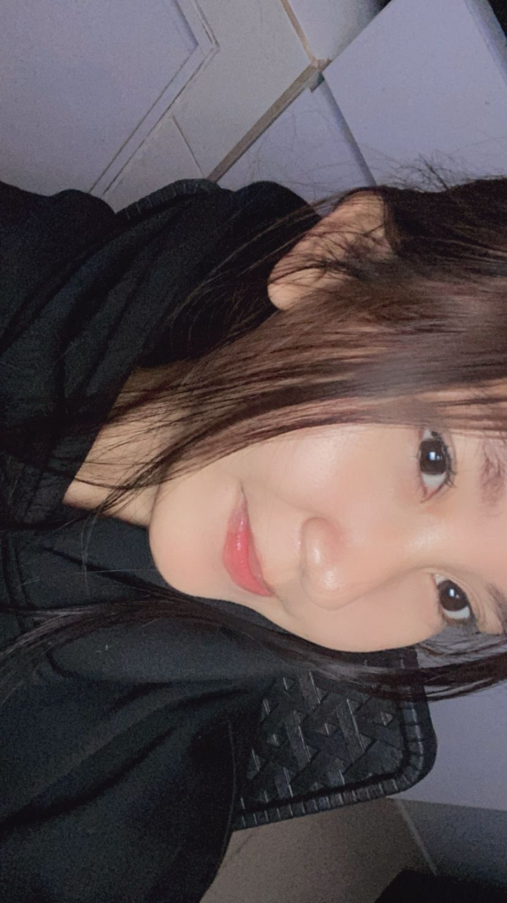
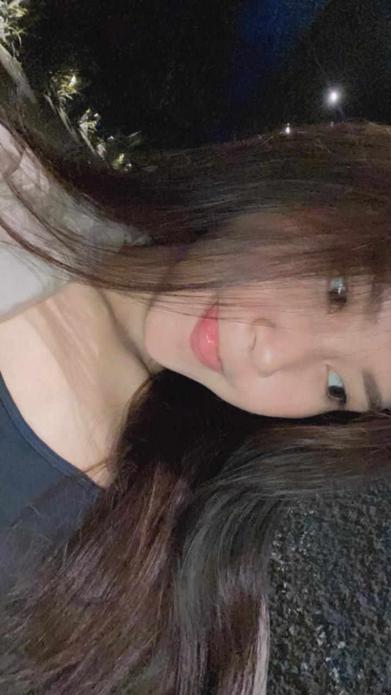
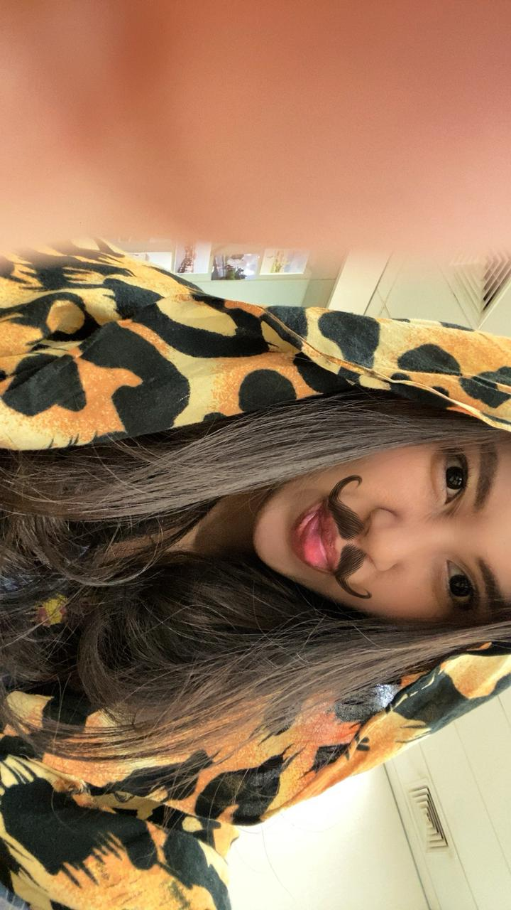

📸 orang cantik

"matamu selalu bisa bikin hariku cerah."

"senyummu itu obat paling manjur buat hatiku."

"kamu bikin aku merasa disayang."

"kamu selalu jadi alasanku tersenyum."
good night sayang sleep well and sweet dreams, selamat beristirahat yaaa sayang semoga besok pagi kamu sakit nyaaa mendingannn yaaa. kamu jangan terlalu banyak pikiran juga yaaa sayang, kalo ada apa apa cerita sama aku yaaa, libatkan aku dalam segala hal di hidup kamu cantik. tetep semangat juga ya sayangku jalanin hari hari kamu.
jangan selalu kepikiran buat nyerah yaaa cantik, kamu harus bertahan lebih lama yaa cintaaaa masi banyak hal hal yang harus kamu lakukan termasuk cita cita kamu yang kamu impikan. aku disini selalu bangga sama kamu sayang. kamu orang yang hebat, walaupun kadang dunia ga berpihak sama kamu tapi kamu masi selalu keliatan kuat. kalo hari ini kurang baik, gapapa yaaa sayang semoga nanti kedepannyaaa jauh lebih baik. terimakasii yaaa sudah melakukan yang terbaik di hari ini
kamu kenapa belakangan ini sering banget sibuk, ada masalah? atau ada hal apa yang buat kamu bisa sesibuk iniii? aku ga penting yaaa? aku tau kok dunia kamu bukan buat aku ajaaa, tapi kenapa yaaa kayanya kamu susah banget kasi kabar ke aku, kamu risih yaaa sama aku? aku selalu nunggu kabar kamu, meskipun kamu diemin aku, aku gatauu apa isi hati kamu, maaf kalo aku belum bisa ngertiin perasaan kamu apa yang kamu mau aku minta maaf. makasi ya sayang, kalo kamu udah berusaha buat tetep ada buat aku meski waktu kamu terbatas, itu lebih dari cukup buat bikin aku kuat nungguin kamu
tata, makasi udah jadi tempat pulang terbaik. kamu itu bener bener anugrah terindah yang allah kasih buat aku. setiap senyummu, setiap perhatianmu, bahkan setiap omelan kecilmu, semuanya bikin aku ngerasa disayang dengan cara yang ga bisa aku temuin di orang lain. terimakasi yaaa, tata cantik, udah bikin hari hari aku lebih berwarna. kamu adalah alasan kenapa aku selalu semangat, alasan kenapa aku berusaha jadi lebih baik. i love you more
"matamu selalu bisa bikin hariku cerah."
"senyummu itu obat paling manjur buat hatiku."
"kamu bikin aku merasa disayang."
"kamu selalu jadi alasanku tersenyum."